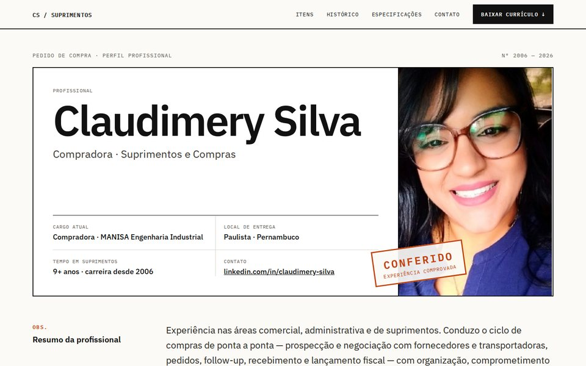
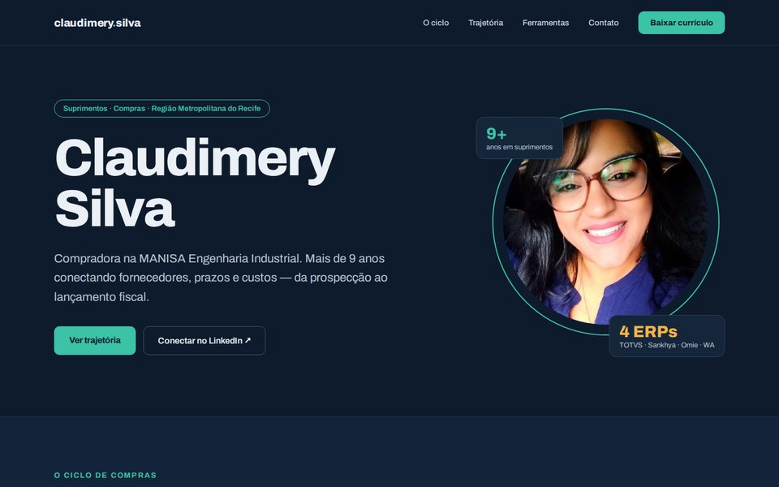
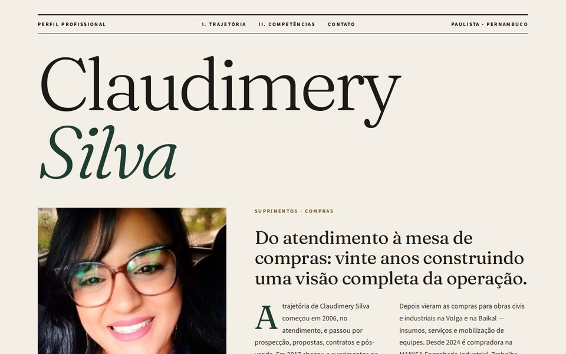
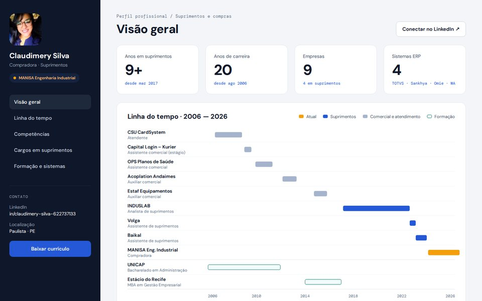
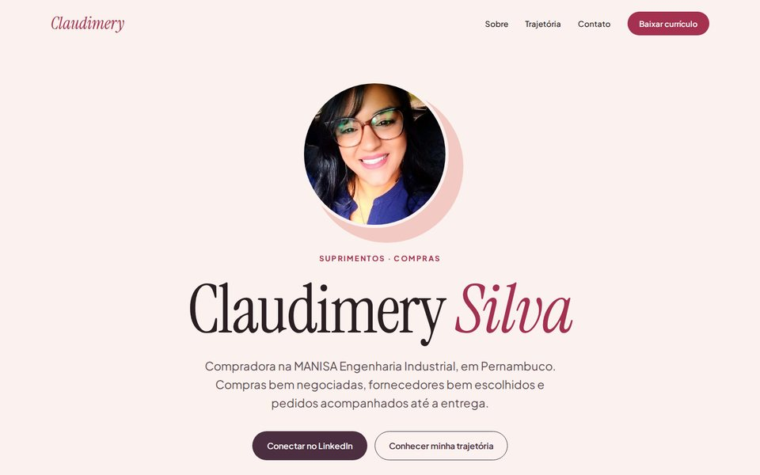

1Pedido de Compra
O portfólio como um documento de compras: competências viram itens do pedido, a experiência vira histórico de fornecimento, com carimbo de “conferido”.
Ver modelo 1 →Cinco propostas com o mesmo conteúdo do seu currículo e estilos bem diferentes.

1O portfólio como um documento de compras: competências viram itens do pedido, a experiência vira histórico de fornecimento, com carimbo de “conferido”.
Ver modelo 1 →
2Tema escuro e moderno, com o ciclo de compras em destaque — da prospecção ao fiscal — e a trajetória em linha do tempo.
Ver modelo 2 →
3Estilo revista de negócios: nome em serifa grande, texto de abertura com capitular, citação em destaque e a carreira em capítulos.
Ver modelo 3 →
4Visual de dashboard: indicadores da carreira, linha do tempo de 2006 a 2026 e uma matriz de competências por empresa.
Ver modelo 4 →
5Centralizado, em rosa e ameixa, com apresentação em primeira pessoa e a trajetória contada em quatro fases.
Ver modelo 5 →